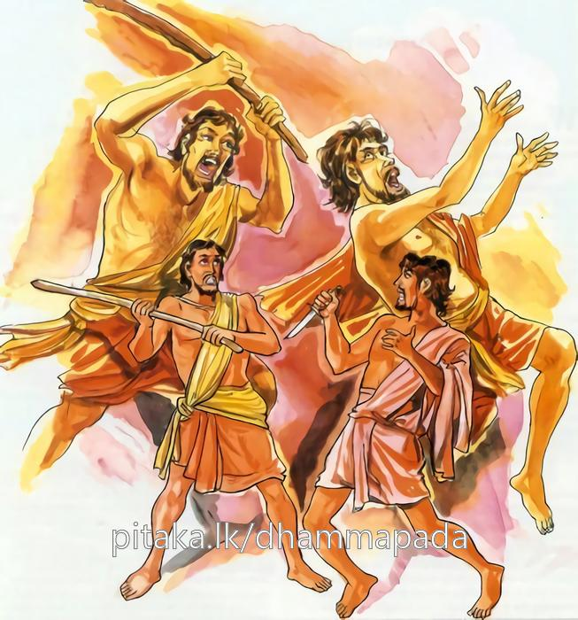
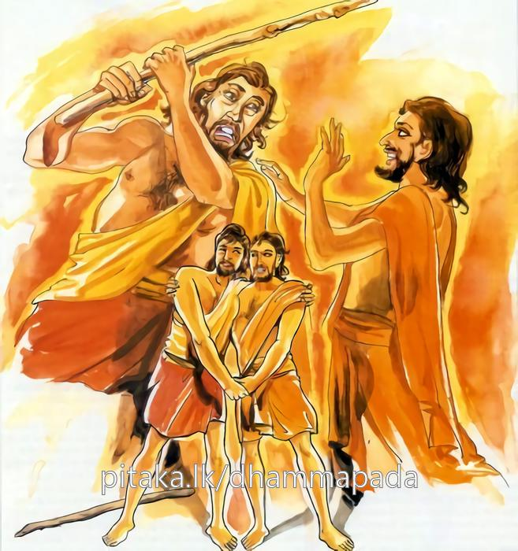

1-3 තුන්වන ථුල්ලතිස්ස ස්ථවිර වස්තුවයි.
මෙම කතාව සද්ධර්ම සාගරයෙන් ද කියවන්න.
අක්කොච්ඡි මං අවධි මං අජිනි මං අහාසි මෙ
යෙ ච තං උපනය්හන්ති වෙරං තෙසං න සම්මති.
‘මට ආක්රෝශ කෙළේ යැ’ යි ද, ‘මට පහර දුන්නේ යැ යි’ ද, ‘මා දිනී යැ’ යි ද, ‘මා සතු දෑ පැහැර ගත්තේ යැ’ යි ද, යම් කෙනෙක් ඒ ක්රෝධය සිතැ බඳිත් නම් ඔවුන්ගේ ඒ වෛරය නො සංහිඳේ.

අක්කොච්ඡි මං අවධි මං අජිනි මං අහාසි මෙ
යෙ තං න උපනය්හන්ති වෙරං තෙසූපසම්මති.
‘මට ආක්රෝශ කෙළේ යැ’ යි ද, ‘මට පහර දුන්නේ යැ යි’ ද, ‘මා දිනී යැ’ යි ද, ‘මා සතු දෑ පැහැර ගත්තේ යැ’ යි ද, යම් කෙනෙක් ඒ ක්රෝධය සිත නො බඳිත් නම් ඔවුන්ගේ ඒ වෛරය සංහිඳේ.

‘අක්කොච්ඡිමං’ ආදී මේ දේශනාව බුදුරජාණන්වහන්සේ දෙව්රම වැඩවාසය කරන සමයෙහි තිස්සතෙරුන් අරභයා දෙසුසේක.
ඒ ආයුෂ්මතුන්වහන්සේ භාග්යවතුන්වහන්සේගේ පියාගේ නැගණිකෙනෙකුන්ගේ පුත්රයෙකි. මහලුවී පැවිදි වුහ. බුදුන්ට උපන් ලාභසත්කාර වළඳා ස්ථූලවූ සිරුරු ඇතිව මටසිලිටි සිවුරු හැඳ පෙරවාගෙන බොහෝ වේලාවල විහාරය මැද තිබුණු උපස්ථාන ශාලාවෙහි සිටියහ. බුදුන් දකිනු කැමැත්තෙන් එහි පැමිණි ආගන්තුක භික්ෂුහූ මේත් එක් මහතෙරනමකියි සිතා ඔහු ළඟට ගොස් වතාවත් දක්වති. පා මැඩීම් ආදිය අවශ්යදැයි විචාරති. හෙතෙම නිහඬවෙයි. දිනක් එක් ළදරුනමක් ඔහු වෙත පැමිණ, ඔබට දැන් වස් කීයක්දැයි විචාරා, මට වස් නැත. මහලුවී පැවිදිවීමියි කී කල්හි, ඇයි දුර්විනීත මහල්ල ඔබ තමන්ගේ ප්රමාණය නොදන්නෙහිය. මෙපමණ මහලු තෙරුන්වහන්සේලා දැකදැකත් සතුටුසාමිචී කථාවක් පමණකුත් නොකරන්නෙහිය. වතාවත් විමසූ විට නිහඬ වන්නෙහිය. මේ කරන්නේ වරදක්යයි කුකුසක්වත් ඇති නොවන්නේදැයි අසුරු ගැසීය.
හෙතෙම ක්ෂත්රිය මාන්නය උපදවා, ඔබ මේ පැමිණ සිටින්නේ කවුරුන් ළඟට දැයි අසා, බුදුන් සමීපයට යයි කී කල, මා කවුරුන්දැයි දන්නහුද, තෙපි සමූලඝාතනය කරදමමියි හඬමින් දුක් දොම්නස්ව බුදුන් සමීපයට ගියේය. බුදුරජාණන්වහන්සේ, තිස්ස දුකින් දොම්නසින් ඇසේ කදුළු පුරාවාගෙන අඬමින් ආවේ ඇයිදැයි ඇසූහ. ඒ භික්ෂුහුත් මොහු ගොස් කුමක් හෝ කලබලයක් කරනුඇතියි සිතා ඔහු සමඟම බුදුන් සමීපයට ගොස් වැඳ එකත්පසෙක සිටියාහුය.
තිස්ස භික්ෂුතෙම, ස්වාමීනි, මේ භික්ෂූහු මට බැණ නින්දා පරිභව කෙරෙත්යයි කීය. තිස්ස ඔබ සිටියේ කොහිද? ස්වාමීනි, වෙහෙර මැද උපස්ථාන ශාලාවේ. මේ භික්ෂුන් එනවා ඔබ දැක්කෙහිද? ස්වාමීනි, එසේය. ඔබ නැඟිට පෙර ගමන් කෙළෙහිද? නැත ස්වාමීනි, එසේ නොකෙළෙමි. සිවුරු පිරිකර ගැනීමට ඇසුවෙහිද? නැත ස්වාමීනී, අවශ්ය වතාවත් හෝ පැන් ගැන විමසුවෙහිද? නැත ස්වාමීනි, අසුන් පනවා පාමැඩීම් ආදිය කෙළෙහිද? නැත ස්වාමීනි.
තිස්ස වැඩිමහලු භික්ෂුන් වෙනුවෙන් මේ සියල්ල කළයුතුයි. එසේ නොකරන්නෙකු වෙහෙර මැද සිටීම නොවටී. දෝෂය ඔබේමය. මේ භික්ෂූන් වැඳ ක්ෂමා කරවාගන්න. ස්වාමීනී, මේ භික්ෂූහු මට ආක්රෝෂ පරිභව කළහ. මම මොවුන්ගෙන් සමාව නොගනිමි. තිස්ස එසේ නොකරව. වැරැද්ද ඔබේමය. ඔවුන්ගෙන් සමාව ගන්න. ස්වාමීනි, මම ඔවුන්ගෙන් සමාව නොගන්නෙමි.
ඉන්පසු ඒ භික්ෂූහු, ‘ස්වාමීනී තිස්ස අකීකරුයි, අකීකරුයි ස්වාමීනි’, යයි කී කල්හි මහණෙනි, මොහු අකීකරු වූයේ දැන් පමණක් නොවෙයි. පෙරත් මොහු අකීකරුවුයේමයයි වදාළ කල්හි, ස්වාමීනී, දැන් මොහු අකීකරු බව අපි දනිමු. පෙර මොහු කුමක් කෙළේදැයි විචාළ කල්හි එසේනම් මහණෙනි අසව්යයි වදාරා අතීතකථාව ගෙනහැර දැක්වුහ.
පෙර බරණැස් රජුන් රජකරන කාලයෙහි දේවල නම් තවුසා අටමසක් හිමාලයෙහි වාසයකොට ලුණු ඇඹුල් ඇති ආහාර ගැනීම පිණිස සිවුමසක් පමණ නගරාශ්රයේ වසනු කැමැත්තෙන් හිමවතින් පිටත්ව ආවේය. නුවර දොරටුව ළඟදී ළමයින් දැක මේ නගරයට එන පැවිද්දන් ලැගුම් ගන්නේ කොහිදැයි ඇසුවේය. ස්වාමීනී කුම්භකාරයාගේ ශාලාවෙහියයි ඔවුහු පිළිතුරු දුන්හ.
තවුසා කුම්භකාරශාලාව ළඟට ගොස් දොරටුවෙහි සිට භාර්ගවය, ඔබට අපහසුවක් නැත්නම් මේ ශාලාවෙහි එක්රැයක් නවතින්නටදැයි ඇසීය. ස්වාමීනි, රාත්රී කාලයෙහි මට ශාලාවෙන් වැඩක් නැත. ශාලාවත් ලොකුය. මනාප හැටියකට විසුව මැනවයි කියා කුම්භකාරයා ශාලාව තවුසාට භාරකෙළේය.
දේවල තවුසා එහි ලැගුම්ගෙන සිටිනවිට නාරද නම් වෙනත් තවුසෙක්ද හිමවතින් අවුත් එම ශාලාවෙහි එක් රැයක් නැවතීමට ඉල්ලා සිටියේය. කුම්භකාරයා, පළමුව පැමිණි තවුසා මොහු සමඟ එක්ව විසීමට කැමතිවූවත් නැතත් තමන් බේරී කටයුතු කළයුතුයයි සිතා ස්වාමීනි, පළමුව පැමිණි අය කැමති නම් ඔහුගේ කැමැත්ත ඇතිව වසනු මැනවයි කීය. ඔහු මුලින් පැමිණි දේවල වෙත පැමිණ ආචාර්යවරයාණෙනි, ඔබට අපහසුවක් නැත්නම් මමත් මෙහි රැයක් නවතින්නටදැයි ඇසීය. ශාලාව ලොකුයි ඇවිත් එක්පැත්තක ඉන්නැයි කීකල්හි ඇතුළට පැමිණ පළමුව පැමිණි අයගේ ඈතින් හුන්නේය. පසුව දෙදෙනාම සතුටුසාමිචී කථා කරමින් නින්දටවන්හ.
නාරද තවුසා නිදනකල දේවල සිටි තැනින් දොරත් සලකාබලා නිදාගත්තේය. දේවල තවුසා නිදනකල්හි තමන් පළමුව සිටි තැන නොසිට තැන් මාරුකොට දොරටුව මැද හරස් අතට නිදාගත්තේය. නාරද රාත්රියෙහි එළියට යනවිට දේවලගේ ජටාව පෑගුවේය. ‘මා පාගන්නේ කවුදැ’යි ඇසුවිට, ආචාර්යය ඒ මමයයි නාරද පිළිතුරු දුන්නේය. එම්බල කූට ජටිලය, කැලේ සිට අවුත් මගේ ජටාව පාගන්නේ ඇයිදැයි ඇසීය. ඇඳුරුතුමනි, ඔබ මෙතැන නිදනබවක් නොදන්නෙමි, මට සමාවන්නැයි කියා ඔහු කෑගසද්දීම පිටතට ගියේය.
දේවල, මොහු දැන් ආපසු එන විටත් මා පාගනු ඇතැයි සිතා හිස තිබු තැනට පයත් පය තිබූ තැනට හිසත් තබා නිදාගත්තේය. නාරද තවුසෝද යළි ඇතුළට එන්නාහු මම පළමුවත් ආචාර්යයන්ට වරදක් කෙළෙමි. දැන් ඔහුගේ පා ඇති පැත්තෙන් ඇතුළු වන්නෙමියි සිතා ඒ පැත්තෙන් එනවිට දේවලගේ බොටුව පෑගුණේය. මේ කවුදැයි ඇසූවිට ආචාරිනී, මම යයි නාරද පිළිතුරු දුන්නේය. ඇයි කූට ජටිලය, පළමුව ජටාව පාගා දැන් බෙල්ලම පාගන්නෙහිය. තට ශාපකරන්නෙමියි කීකල, ආචාරිනී, මගේ වරදක් නැත. මම ඔබ මෙසේ නිදන බවක් නොදත්තෙමියි කීය. පළමුත් ආචාරීන්ට කරදරයක්වූ නිසා දැන් පා ඇති පැත්තෙන් එන්නෙමියි එසේ කෙළෙමි. (නොදැන වු වරදට) මට සමාවුව මැනවැයි ඉල්ලා සිටියේය. කූටජටිලය, මම තොපට ශාපකරමි. ආචාරිනී, එසේ නොකළ මැනවයි කියද්දීත් දේවල එබස් නාසා -
‘දහසක් රැස් කිරණවලින් සියයක් තේජෝ බලයෙන්
අඳුර නසන හිරුදෙවියන් ලොවට උදාවනු සමඟම
තාගේ හිස් මුදුන පැලී සත්කඩකට වෙන් වේවා’යි
ශාප කෙළේය.
නාරද, ආචාරිනී. මගේ දොසක් නැතැයි කියද්දීම ඔබ මට ශාප කෙළෙහිය. මා නිදොස් බැවින් ‘දෝෂය ඇති අයගේ හිස්මුදුනම පැලේවායි
‘දහසක් රැස් කිරණවලින් සියයක් තේජෝ බලයෙන්
අඳුර නසන හිරුදෙවියන් ලොවට උදාවනු සමඟම
වරදකරුගෙ මුදුන පැලී සත්කඩකට වෙන් වේවා’යි
ඔහුද ශාප කෙළේය.
කෙසේ වුවත් නාරද මහානුභාවසම්පන්නය. අතීතයෙන් සතළිස් කල්පයකුත්, අනාගතයෙන් සතළිස්කල්පයකුත් වශයෙන් අසූකල්පයක් ගැන ඔහුට සිතිය හැකිය. එහෙයින් මේ ශාපය කාගේ මුදුනෙහි පතිත වේදෝහෝයි සිතාබලන්නේ ආචාර්යයන්ගේ මුදුනටම එය පතිත වනබවදැක, ඔහු කෙරෙහි අනුකම්පාවෙන් ස්වකීය සෘද්ධිබලයෙන් හිරු නැගීම නවත්වා දැමීය.
නුවරවැසියෝ, හිරු නොපායන කල්හි රජගෙදරට ගොස්, දේවයන්වහන්ස, ඔබ රජ කරන විට ඉරත් නොපායයි. එනිසා අපේ සියලු වැඩත් නැවතී තිබේ. අපට හිරු නංවා දෙන්නැයි කෑගැසුහ. රජු තමන්ගේ කායකර්මාදියේ වරදක් ඇද්දැයි විමසා සිතාබලා එහි කිසි වරදක් නොදැක, හිරු නොපායන්නේ කුමක් නිසාදැයි සිතා, පැවිද්දන්ගේ කිසියම් විවාදයක් වුවමැනවැයි සැකකොට-කිමෙක්ද, මෙනුවර පැවිද්දන් ඇද්දැයි විචාළේය. දේවයන්වහන්ස ඊයේ රෑ කුම්භකාර ශාලාවට ආ පැවිද්දෝ වෙතියි කීකල්හි, රජු එකෙණෙහිම විලක්කු (පන්දම්) දල්වාගෙන එහි ගොස් නාරද තවුසා වැඳ එකත් පසෙක හිඳ-
දඹදිව සියලු වැඩ නොපවතී නාරදයෙනි
ඇයි ලොව අඳුරු වී මට එය කියා දෙනු මැන’යයි
විචාළේය.
නාරද තවුසෝ ඒ සියලු පුවත් දන්වා සිටියහ. මේ කරුණ නිසා මොහු මට ශාප කෙළේය. ඉන්පසු මම ‘මා තුළ දොසක් නැත. වරද ඇත්තා පිට ශාපය වැටේවායි නැවත ශාප කෙළෙමි. එසේ කොට කාගේ හිස පිට ශාපය වැටේදැයි බැලුවෙමි. එවිට, හිරු පායනවාත් සමඟම ආචාර්යයන්ගේ හිස සත්කඩකට පැලීයනබව දැක මොහු කෙරෙහි අනුකම්පාවෙන් අරුණ නැගෙන්නට නොදෙමි’යි කීවේය.
යම් හෙයකින් මොහු මගෙන් සමාව ගත්තොත් ශාපය ක්රියාත්මක නොවන්නේයයිද කියා සිටියේය. එසේ නම් මොහුගෙන් සමාව ගන්නැයි රජු දේවලට කීවේය. එවිට දේවල, ‘මහරජතුමනි, මොහු මගේ ජටාවත්, බෙල්ලත් දෙවරක්ම පෑගූවේය. මම මේ කූට ජටිලයාගෙන් සමාව නොගන්නෙමි’. සමාව ගන්න ස්වාමීනී, එලෙස නොකරන්න ස්වාමීනී. මහරජ මම සමාව නොඉල්ලමි. ඔබේ හිස් මුදුන සත්කඩකට පැලේයයි කීවත් ඔහු ක්ෂමාකර නොගත්තේය.
ඉන්පසු රජු, ‘ඔබ සිය කැමැත්තෙන් සමාව නොගන්නෙහි නම් අපි මෙසේ කරන්නෙමු’ යයි තවුසාගේ අත් පා බඩ බෙල්ල යන තැන්වලින් අල්වා නාරදගේ පාමුල නමාලූවේය. නාරද, ආචාරිනී නැගිටින්න ඔබට සමාව දෙමියි කියා, මහරජ, මොහු සැබෑ සිතින් සමාව නොගනියි. නගරය ළඟ එක් විලක් ඇත. මොහු එහි ගෙනගොස් මැටිපිඬක් මොහුගේ හිසමත තබ්බවා, කරවටක් පමණ දියේ ගිල්වා තබන්නැයි කීවේය. රජු එසේ කෙළේය. දේවල ඇමතූ නාරද, ආචාරිනී, මා සෘද්ධිය අතහැර විසුරුවා දැමුකල හිරුරැස් නැගී එයි. ඒහාත් සමගම දියේ ගිලී වෙනත් තැනකින් මතු වෙන්නැයි උපදෙස් දුන්නේය. හිරුරැස් නැගෙත්ම ඔහු හිසපිට තිබූ මැටිපිඩ සත්කඩක්ව පැලිණි. ඔහු දියේ ගිලී වෙනත් තැනකින් මතුවී පලාගියේය.
බුදුරජාණන්වහන්සේ මේ දේශනාව ගෙනහැරදක්වා, මහණෙනි, එකල රජ මෙකල ආනන්දය. දේවල නම් මේ තිස්සය. නාරද නම් මමය. මෙසේ එකලත් මොහු දුර්වචයයි ප්රකාශ කොට තිස්ස තෙරුන් අමතා, “තිස්ස! භික්ෂුව විසින් අසවලා මට බැන්නේය. අසවලා මට ගැසුවේය. අසවලා මා පරදවා ජයගත්තේය, අසවලා මගේ දේ පැහැර ගත්තේයයි සිතන්නාගේ වෛරය නම් කවදාවත් නිවී නොයන්නේය. එසේ වෛර නොකරන්නාගේ පමණක් වෛරය සංසිඳේ’ යයි දක්වා මේ ගාථාව වදාළහ:
බැණීය ඔහු මට ගැසීය ඔහු මට
ඔහු මා පරදා මගේ දේ ගත්තැයි
වෙර බැඳ ගත්තොත් ඒ වයිරය නම්
කවදා කිසි විට නොසන්සිඳේ
බැණීය ඔහු මට ගැසීය ඔහු මට
ඔහු මා පරදා මගේ දේ ගත්තැයි
වයිර නොබැන්දොත් ඒ වයිරය නම්
ඉතිරි නොවේ සන්සිඳේ සිඳේ.
එහි අක්කොච්ඡි යනු අක්රෝෂයයි. අවධි යනු ගැසීමයි. අජිනි යනු බොරු කපටි සාක්ෂි කීමෙන් හෝ වාදප්රතිවාදයෙන් හෝ එකටඑක කිරීමෙන් දිනුවේය යන අර්ථයි. අහාසි මෙ යනු මා සන්තක පාත්රාදි කිසිවක් පැහැර ගත්තේය යන අර්ථයි. යෙතං යනු යම්කිසි, දෙවියෝ, මිනිස්සු, ගිහියෝ, පැවිද්දෝ හෝ මට ආක්රෝෂ කළෝය යනාදි හේතුවක් නිසා ඇතිකරගත් ක්රෝධය, තෘෂ්ණාවෙන් ඇදගෙන යන ක්රෝධය කුශාදි තෘණවර්ගවලින් නැවත නැවතත් වෙළන, බඳින කුණුමසක් මෙන්ද, එක් වරක් ඇතිවූ වෛරයයි. න සම්මති යනු නොසන්සිඳීමයි. යෙ තං න උපනයිහන්ති යනු අසිහියෙන් නොමෙනෙහි කිරීම් වශයෙන් හෝ කර්මය ගැන නැවත සිතා නොබැලීමෙන් හෝ කුමක් හෝ හේතුවක් නිසා උපන් ක්රෝධය ගැන, ඔබ භවයකදී බැන්නා විය හැකිය. ගැසුවා විය හැකිය. කපටි සාක්කි ගෙනහැරපා ඔහු පැරදුවා විය හැකිය. කිසි හේතුවක් නිසා කුමක් හෝ පැහැර ගත්තා වියහැකිය යනාදි වශයෙන් නිදොස්ව සිටත් බැණුම් ඇසීමාදියට භාජනයවුයේයයි මෙසේ කර්මය අනුව කරුණු සිතා ක්රෝධ නොකළයුතුය. එහිදී ඔවුනතර ප්රමාදයෙන් හෝ උපන් වෛරය ක්රෝධ නොකිරීමෙන් දර නොලබන ගින්නක් මෙන් නිවී යන්නේය.
දේශනාවගේ කෙළවර ශතසහස්රයක් භික්ෂූහු සෝවාන්ඵලාදියට පැමිණියාහුය. ධර්මදේශනාව මහජනයාට සාර්ථකවිය. දුර්වචයාත් සුවචවිය.